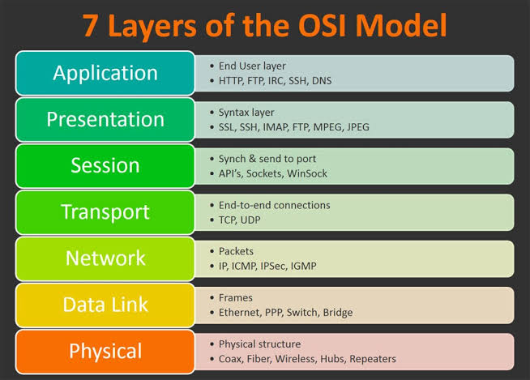
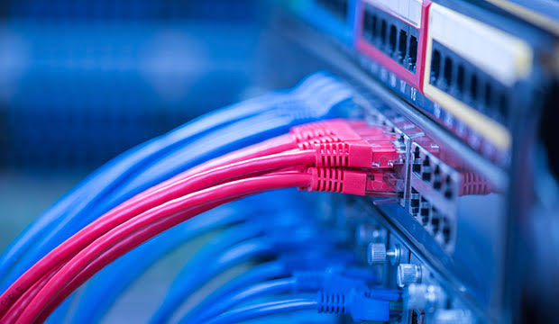
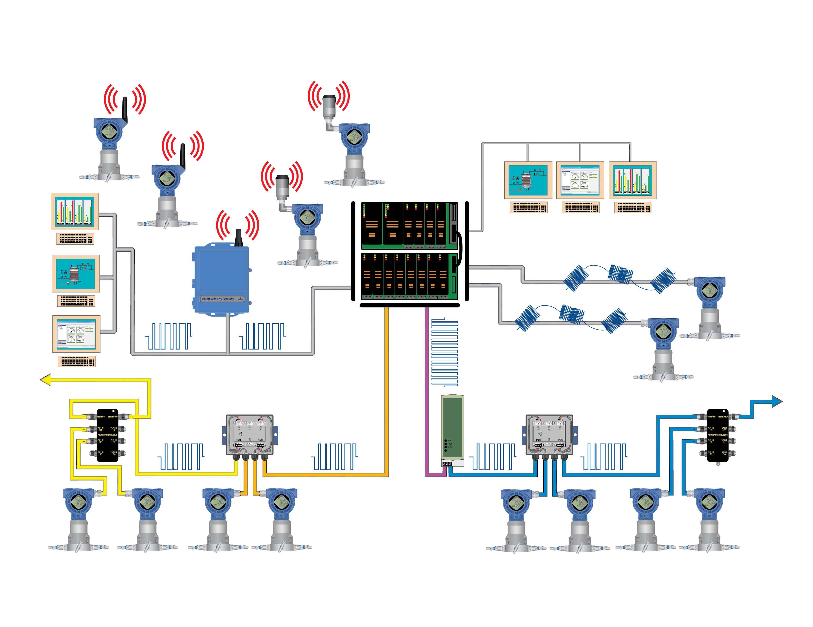
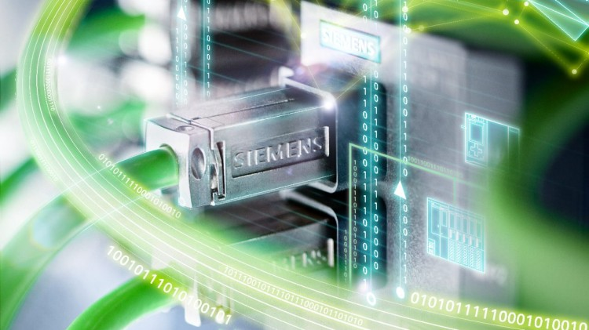
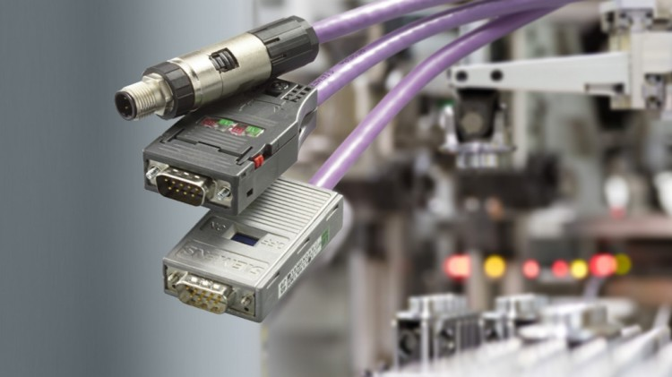
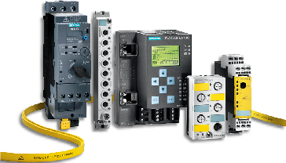
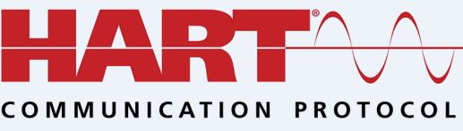
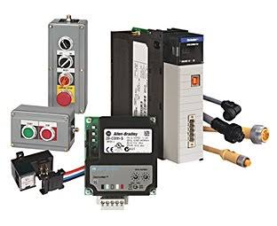
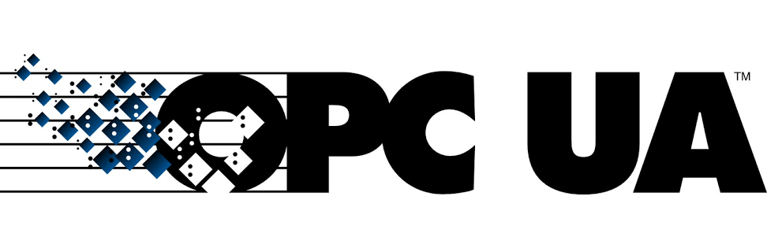

Communication between devices can be defined as the exchange of data and information, where both parties can transmit, receive and process that data. The main objective of a data communication system is to transfer information from one place to another.
During the design and implementation of communication architecture it is important that proper standards are followed to ensure development of reliable network systems. A communication standard establishes the rule for information interchange between communicating devices. Communications between devices and systems on the plant floor has to be standardized in order to ensure interoperability, availability and scalability. Device interoperability can be defined as the ability of devices from different OEMs to operate together. It simplifies the integration of different products and reduces development and implementation costs.
Within a data communication system there is a transmitter, receiver and a data link (communication medium). The communication link or channel can either be:
- Simplex: A communication channel where the transmitted data can only flow in one direction.
- Half-duplex: a communication channel with a capacity to transmit data in either direction, but it can only flow in one direction at any given time.
- Full-duplex: Actuators: a communication channel where data can flow in either or both directions at the same time.
The medium for data transport from one device to another can either be described as baseband or broadband. A baseband medium carries a single channel of information, while a broadband medium carries many different channels of information at the same time. Example of a broadband medium is the cable for transmitting television signals.
The smallest unit of data within a digital communication link is called a “bit” - binary digits which can be either 1 or 0. Individual characters of the alphabets are usually encoded into an 8-bit code, or bytes before the character can be transmitted across the data communication links.
Parallel & Serial Communication
A communication link can either be parallel or serial. A parallel data communication link A.K.A “Bus”, is a type of link that uses eight separate conductors and a common ground connected between the two communicating devices. Each of the eight conductors carries an electrical voltage which represents either the logic 1 or logic 0 bit code. The transmitter converts the character into voltage levels and then it adds an additional signal to signify to the receiver when the data is ready to be read. Both the transmitter and the receiver need a standard for character-voltage translation for the data to be correctly processed.
Serial data communication links require only two wires between the transmitter and receiver. The voltage signals here are sent in sequence on the two wires with reference to a defined time base. Here the data transfer is done bit by bit and is usually arranged in a particular format with some additional information also added, so the message can be effectively transmitted and understood at the receiving end. Serial communication tends to be more advantageous because of its resistance to electrical noise.
Data is transferred in a short frame known as “Data packets” which contains the address of both sender and receiver, the data and error check characters. The measure of how fast serial data is moving between devices is known as “Baud rate” measured in bits per second (bps). Data packet framing are rules that govern which characters are for the addresses, data, and error information
Networking
 A Computer Network.
A Computer Network.
A network is defined as a group of devices connected to each other with an ability to send and receive data, and communicate with one another.
Networks can be of three major types:
- Local Area Network (LAN): These are a group of independent devices within a close geographic area, connected to one another allowing communication with each other. A LAN is usually characterised by close proximity of the networked devices, usually within a building or over short distance from each other.
- Metropolitan Area Network (MAN): This is a network formed when the LAN of a group of buildings in close proximity are interconnected together.
- Wide Area Network (WAN): A WAN is formed by the interconnection of LANs over a wide geographical area. An example of a WAN would be the famous internet.
The arrangement of the devices on a network is known as the network topology. For example, a LAN topology is the physical configuration of network devices in close proximity to eachother.
Examples of physical LAN topologies are: Point-to-Point, Bus, Star, Ring, and Daisy-chain.
Open and Closed Network Systems
Networks that are specific to one manufacturer and work with special proprietary hardware and protocols are called closed systems.
While open networks are communication networks that conform to specifications and guidelines which are open to all. These guidelines are usually called standards, and it allows equipment from any manufacturer who comply with the particular standard, to be used interchangeably on the network.
Communication Standards
Communication systems often need a common set of rules in order for both communicating parties to understand each other and it is called a need for compatibility. Communication standards make this possible.
There are seven major organisations involved in drawing up standards affecting industrial data communications and they are:
- IEEE: Institute of Electrical and Electronic Engineers
- ISO: ISO: International Organizations of standards
- TIA: Telecommunication Industries Association
- IEC: International Electrotechnical Commission
- EIA: Electronic Industries Association
- CCITT: Comite Consltatif International Telegraphique et Telephonique
- ANSI: The American National Standards Institute
The OSI (Open Systems Interconnect) Model
 The OSI Model.
In 1978 the ISO defined a reference model for data communication to deal with the proliferation of closed network systems, called the open system interconnection model. The model is composed of seven layers. Each layers have a define purpose and interfaces with the layer above, or below it.
The 7 (Seven) Layers are:
- Layer 7 - Application Layer
- Layer 6 - Presentation Layer
- Layer 5 - Session Layer
- Layer 4 - Transport Layer
- Layer 3 - Network Layer
- Layer 2 - Data link Layer
- Layer 1 - Physical Layer
- Physical layer: this layer includes the elements involved with the actual transmission and reception of signals and the physical connection between devices and networks. It encompasses the network cables, power plug, connectors, transceivers, repeaters etc. Commonly used physical layer wiring standards include RS-232, RS-422, RS-485, RJ-45 etc.
- Data link layer: this layer provides services that allow communication between devices. It includes framing and de-framing of data packets, error detection, and addressing mechanisms. It is divided into sub layers: MAC (Media Access Control) and LLC (Logical Link Control). It is responsible for setting up links across the physical networks and it usually includes data communication devices called . switches
- Network layer: this layer is responsible for device-to-device data delivery and routing across networks. This layer allows for data transfer from one network to another. It usually includes routers, gateways and higher-level switches.
- Transport layer: Transport layer: this layer is responsible for successful transmission of data across a network. They provide a guaranteed delivery messaging service, ensuring that the data is error-free, correctly sequenced, and properly delivered. The standard protocols in this layer include: the TCP/IP (Transmission Control Protocol) and the UDP (User Datagram protocol).
- Session layer: Session layer: this layer is responsible for the construction, direction and conclusion of connections between devices. It provides a means for establishing communication sessions between applications running within the network devices. It is also responsible for authentication and reconnection if interruption occurs on the network.
- Presentation layer: this layer is responsible for syntax processing, and converting data from one format to another. It ensures the correct translation of data into a format that the receiving device needs it to be.
- Application layer: this layer provides facilities or interface to allow the application protocols to use the network to work with the data that the network clients use. An example protocol in this layer includes the famous HTTP (hypertext transfer protocol)
Industrial Communication Protocols and Networks
 A Network Switch.In industrial process automation and control, certain protocols have been put in place to enable devices from different layers of the industrial automation hierarchy - level 1: Field devices, level 2: controllers, level 3: Information and management systems, communicate with each other. Some of these protocols include: Modbus, Profinet, Profibus etc.
Fieldbus
 A Fieldbus Network.Computer systems used within the industrial space are connected by networks known generally as Fieldbus. This network is a means by which we can connect computers and instruments in process or manufacturing plants, which allow for real-time control and monitoring. It permits the various famous physical network topologies such as: Ring, Star, Daisy-chain etc. Fieldbus industrial networks can be broken down into four levels.
- Level 1 – Sensor Bus Networks
- Level 2 – Device Bus Networks
- Level 3 – Control Bus Networks
- Level 4 - Enterprise Networks
I. Level 1- Sensor Network: This is the least complex of networks, developed for industrial applications. In this network multiple basic field devices like switches and sensors are connected with controllers on one network cable.
II. Level 2 - Device Bus Network: This network works on a larger scale, connecting many sensors and actuators together. It also connects equipment to variable speed drives and motor control centres that allow for control of individual elements on a network.
III. Level 3 -Control Bus Network: These are the most advanced network used on the factory floor and data communication happens at the higher level. Here, PLCs are connected to each other and with HMIs. Also smart instruments capable of performing complex operations can also be connected at this network level.
IV. Level 4 – Enterprise and Information Network This network level connects all computers and departments of an enterprise together this level of network is primarily computer driven and allows for data collection, monitoring, file transfers an email Exchange on a large scale.
The Fieldbus is not a connection type, but it describes a group of protocols such as: ControlNet, Modbus, Profibus etc.
some of the main industrial communication protocols widely used in industrial process automation are:
- Profinet/ Industrial Ethernet
- Profibus
- Profibus
- Modbus
- HART
- DeviceNet
Profinet (The Industrial Internet)
 ProfinetProfinet uses traditional Ethernet hardware and software to define a network, but the hardware used in Profinet are designed for a more rugged industrial application hence they are built with more rugged structure. It is widely used in industrial applications based on the existing popularity of Ethernet hardware and software and its ease of use and interoperability. Profinet provides the fastest communication means amongst all the protocols with speeds of up to 100mbps. It comes with a standard green coloured cable and has the regular RJ-45 Jack.
Profibus
 ProfibusProfibus is an open digital communication system with a wide range of applications in the field of industrial process automation and control. It is defined by the IEC-61158 standard. Profibus is a fieldbus communication standards for linking process control and plant automation devices and modules. It is a high-speed bi-directional serial messaging protocol used for transfer of information usually from controllers (master devices) to remote I/O modules (slave devices). In scenarios where we have to connect to remote devices from controllers, instead of running individual cables from controllers to these remote sensors, we can simply use a single multi drop cable to connect all the devices and them one cable back to the controller and this helps save a lot save a lot of material. Profibus is of two type: Profibus DP (Decentralized Peripherals) and Profibus PA (Process Automation).
- Profibus DP (Decentralized Peripherals): this is used to couple remote I/O modules to controllers, providing data transfer speed of 9.6 kbps- 12 Kbps and for wiring standards, it comes with a purple coloured cable and a standard DB-9 connector.
- Profibus PA (Process automation): this is used in remote locations for sensors and actuator interfacing where environments are hazardous and toxic. It comes with a blue coloured cable and data transfer speed of up to 32 kbps.
- AS-I Master: this device controls the network and organizes all the data traffic on the line providing connection to the higher level controls system through field bus connections.
- AS-I Cables: this consists of a yellow coloured cable which carries both power and data to the sensors, a black cable to carry 24 volts to the actuators.
- The power supply unit: it comes with a separate power supply unit which supplies a constant regulated DC voltage to the master and slave devices.
- Modbus over serial (master-slave configuration): A Modbus serial network has a master device that issues command to slave devices and slave devices don't transmit information except they received instructions to do so from the master, and there can only be one master on the network and a maximum of 247 slave devices each with a unique slave ID. SCADA and HMI would typically be the master communicating with a series of Modbus slave devices like PLCs.
- Modbus over Ethernet (client- server configuration): these are Modbus devices using regular Ethernet cables and switches to communicate with each other. For the mothballs TCP IP network, an MBAP header (Modbus application header) is added to the start of each message and this contains all the identifying information needed to route the data to the addressed slave devices.
- Unified Architecture
- Data Access
- Alarms and Events
- Security
AS-I (Actuator Sensor Interface)
 AS-I ModulesActuator sensor interface is used to operate actuators and sensors with control level devices. It is an open standard for simple networking of devices found out in the field area, where we need to connect multiple actuators and sensors. It comprises of an intelligent cabling system, designed to replace multiple discrete wires linking actuators and sensors with the PLC or other controlling devices. It uses a master-slave configuration with cyclic polling, where a single AS- Interface master can exchange input and output data with up to 62 AS-I slave devices. They allow transmission of both digital and analogue signals with up to four (4) inputs, and four (4) outputs at any given time.
AS-I devices have cost-saving and wiring benefits making them really attractive choice for connecting field sensors and actuators.
The AS-I configuration has three main components:
The communication range of connected AS-I devices is around 100m and can be extended to 600m with repeaters and extension plugs, making them useful for remote locations. They can also be used in safety systems and are called “AS-I Safe”. It is a standard safe AS-I network, with special AS-I components.
Modbus
Developed by Modicon in 1979, created specifically for use with Modicon PLCs. Today it is an open protocol used by a wide range of automation products. It can be used over Ethernet, as well as over serial cable. It is also a master-slave communication protocol, which operates by allowing one master device communicate with up to 247 slave devices on a common line. Each slave device is assigned an address to distinguish it from other connected slave devices.
Modbus has two main configuration:
The Modbus protocol comes in three variations or modes:
Modbus ASCII
Modbus RTU
Modbus TCP/IP
For the cabling standard it usually comes with a white coloured cable with either RS-232, RS-422, RS-485. Modbus RTU is the most common implementation of the Modbus protocol. It uses binary coding and CRC error checking methods. Two different Modbus modes are incompatible. Meaning that when a device is configured for Modbus RTU, it can't operate with those configured for Modbus ASCII and vice-versa.
Wiring standards for Modbus:
RS-232: this is used for a single point-to-point arrangement, to connect just one device to another within a distance less than 50ft (15m).
RS-422 and RS-485: this is a form of serial communication that connects more than two devices on the same line and with a distance greater than 50ft
RS-485 is by far the most popular method for Modbus masters communicating with multiple slave devices. It supports up to 32 nodes over a range of up to 400ft (1,200m) without need for a repeater. Slave devices must be connected in a daisy chain topology.
HART (Highway Addressable Remote Transducer):
 HART LogoThis is a hybrid communication protocol where a modulated two-way digital signal is imposed on the normal industry standard 4-20mA analog signal which usually carries process variable signals. It operates using the Bell-202 modem standard which specifies a modulation method known as “Audio frequency shift keying (AFSK)” to encode and transfer digital data at the rate of 12,000bps, where frequency signals are superimposed on the analogue signal. Frequency ranges of 1200Hz indicates a bit 1 and 2200Hz indicates a bit 0 which becomes digital signal 1's and 0's
With this we can send both digital and analogue process data on the same pair of wires which could be used to send other device details to the controller asides the normal analog 4-20mA process signal. This signal includes: device configuration, device status, tag name, calibration settings etc. For the wiring standard it usually comes with a black coloured cable clearly indicating HART compatibility status. In this protocol, both sensors and analogue inputs modules of the controller will need to support the HART protocol. Fortunately today, HART is built into most commercially available analogue sensors.
HART is a very good choice for multi-variable instruments like mass-flow metres, where mass-flow, volumetric flow, temperature and density all need to be communicated to the control system over a single cable. The HART protocol is governed by a vendor Independent association (the HART communication foundation) so irrespective of the manufacturer, various HART enabled devices can easily be interchanged.
DeviceNet
 DeviceNet ModulesThis is an application level protocol used in industrial automation environment. It is a communication tool that allows us talk between PLCs and many control devices such as motors, flow metres etc. Instead of the PLC talking directly to the modules it can talk via a DeviceNet scanner. With DeviceNet, we join the power and signal into one cable, eliminating the need of multiple cables. It was originally developed for Allen-Bradley the Rockwell Automation PLC, but now is an open network protocol that is now managed by a group called the Open DeviceNet Vendors Association (ODVA) which develops standards for third-party vendors to utilise the protocol. It follows the OSI model based on a common industrial protocol (CIP).
The physical layer consists of a combination of cables, nodes and termination resistors in a “Trunk-line, Drop-Line” topology. For the data link layer, DeviceNet uses the controller area network (CAN) standards that handles all the messaging between controllers and devices. The network and transport layer of DeviceNet establishes a connection with devices by using connection IDs (consisting of MAC IDs and Message IDs) for the nodes. With a DeviceNet Connection, we can have up to 64 total possible connections.
OPC UA (Unified Architecture)
 OPC LogoThis is an open standard specified for information exchange and industrial communication between devices and machines, machines and enterprise systems in a convergence of Information technology (I.T) and Operation technology (O.T). It is a scalable open architecture that signifies interoperability standards for secure and reliable data Interchange in industrial automation systems.
OPC was created to address the need for direct communication between field technology and different monitoring applications useful for industrial processes such as: ERP, SCADA, MES etc. Abstracting the hardware, and enabling simple element integration. It is vendor-independent, scalable and secure. It is based on a Client-Server architecture where all OPC enabled clients, are able to interact with, and send requests to OPC servers irrespective of the manufacture of the device.
It is an open industrial specification for system interconnectivity. The various OPC specifications include: